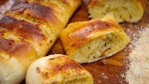

Pão de Alho

Vai ter churrasco no fim de semana?
Que tal transformar aquele pão francês amanhecido num belo e apetitoso pão de alho caseiro?
Confira com a gente como fazer essa delícia de uma forma muito simples!
Ingredientes (6 porções)
- 6 pães franceses (médios)
- 2 colheres de sopa de alho picadinho
- 1/2 xícara de chá de cheiro-verde picado
- sal a gosto
- 1 vidro pequeno de maionese
- 1 colher de sopa não muito cheia de orégano
- 1/2 xícara de chá de parmesão
- pimenta a gosto
Modo de preparo (Tempo: 10min)
- Em um recipiente misture a maionese, o alho, o orégano, o cheiro-verde, o sal e a pimenta e reserve.
- Faça cortes horizontais no pão francês de maneira a formar pequenas fatias (mais ou menos 4), mas sem desprendê-las umas das outras (como no pão de alho comprado).
- Passe a mistura reservada entre as fatias e depois envolvendo todo os pães.
- Polvilhe sobre os pães o parmesão ralado.
- Leve à churrasqueira e asse bem de ambos os lados.
Página Inicial